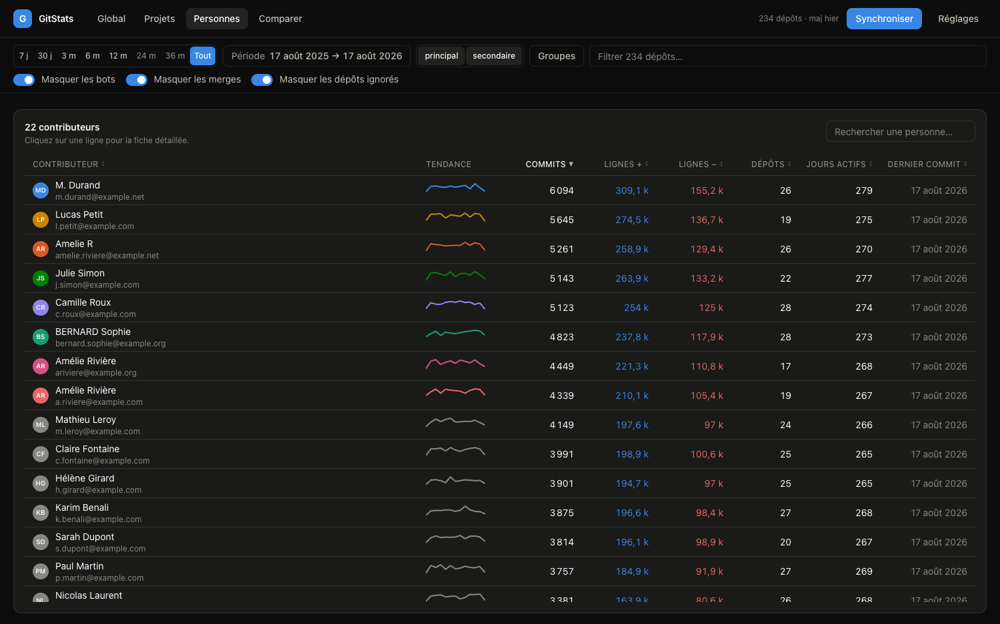

Open source · Licence MIT · Aucun backend
Ce qui s'est vraiment passé sur vos 234 dépôts cette année.
GitLab sait montrer un dépôt. GitStats montre le parc entier — sur plusieurs instances, dans les mêmes graphiques, sans serveur à déployer ni token à confier à qui que ce soit.
Un token read_api suffit — et il ne quitte jamais votre onglet. La démo, elle, n'en demande aucun.

Le problème
Personne ne sait répondre à la question la plus simple
« Qu'est-ce qui s'est passé sur nos dépôts cette année ? » L'interface de GitLab répond dépôt par dépôt, et s'arrête net quand les dépôts sont répartis sur deux serveurs différents.
Les outils qui savent le faire demandent en général un backend, une base et un compte de service. Donc une décision d'hébergement, une revue de sécurité, un budget d'exploitation — et un token qui vit ailleurs que chez vous. Pour un tableau de bord qu'on regarde une fois par mois, le prix d'entrée est absurde.
GitStats prend l'autre chemin : c'est une page statique.
Votre navigateur appelle lui-même l'API de chaque instance avec votre Personal Access Token, agrège les résultats et les stocke en local. Rien à déployer, rien à administrer, et le token ne quitte jamais l'onglet.
Ce que ça donne
Quatre lectures, une seule barre de filtres
Chaque écran répond à une question différente, et tous obéissent au même jeu de filtres : période, instances, dépôts, personnes, merges masqués ou non. Changer la période repeint tout, immédiatement — sans re-synchroniser quoi que ce soit.




Les détails
Les décisions qui font qu'on peut croire les chiffres
Un tableau de bord d'activité est facile à écrire et difficile à rendre juste. Voici quatre pièges qui, ignorés, faussent silencieusement tous les totaux — et ce que GitStats en fait.
-
01
Les lignes d'un commit de merge ne sont jamais comptées
GitLab calcule le diff face au premier parent : pour un merge de branche, il renvoie tout le travail déjà compté commit par commit. Les inclure doublerait le volume de tout dépôt qui merge.
-
02
Un dépôt mirroré entre deux serveurs ne compte qu'une fois
Deux dépôts qui partagent un SHA de commit sont forcément le même code — un SHA est un hachage de tout l'historique. La détection est donc certaine, et quasi gratuite.
-
03
Aucune identité n'est fusionnée sans validation
Regroupement automatique sur e-mail identique, suggestions pour le reste. Deux personnes peuvent porter le même nom, et une fusion abusive fausse durablement toutes les comparaisons sans que rien ne le signale.
-
04
L'activité est datée sur
authored_dateQuand le travail a été fait, plutôt que quand un rebase l'a réécrit. Le curseur d'incrémental, lui, suit
committed_date— seule date que l'API sait filtrer.
Le coût
Mesuré sur une vraie instance, pas supposé
Le pari « 100 % client » tient à des propriétés précises de l'API GitLab. Elles ont été vérifiées avant d'écrire la première ligne de code.
| Point vérifié | Résultat |
|---|---|
CORS sur /api/v4 | OK — préflight OPTIONS + PRIVATE-TOKEN → 200. Aucun backend nécessaire. |
| En-têtes de pagination | OK — Link, X-Total, ETag exposés : progression exacte dès la première page. |
En-têtes RateLimit-* | Non exposés — le débit doit donc s'auto-réguler sur le seul 429. |
| Écriture de 30 000 seaux en IndexedDB | 24 s avec trois index. Deux n'étaient jamais interrogés : supprimés, écriture par lots ⇒ 9 s. |
1 200 à 2 700 appels
Soit 3 à 7 minutes pour 234 dépôts sur 12 mois, en trois vagues — un classement est déjà lisible au bout de ~40 secondes.
50 à 100 appels
Moins de 30 secondes. Un dépôt qui n'a pas bougé coûte zéro appel : last_activity_at arrive gratuitement dans la liste des projets.
Vos données
Il n'y a pas d'intermédiaire, parce qu'il n'y a rien entre les deux
Héberger l'application ne change rien au modèle : le serveur ne livre que des fichiers,
il ne voit ni les tokens, ni les données. npm run build produit un dossier
statique qui se dépose sur GitHub Pages, un S3 ou un partage interne, sans aucune règle
de réécriture.
- →
Les tokens ne sont jamais écrits
Ni en base, ni dans le fichier exporté. Ils vivent en
sessionStorage, ou enlocalStoragesur choix explicite. - →
Les commits bruts ne sont jamais archivés
L'agrégation en seaux (dépôt, auteur, jour) se fait à l'ingestion. Seuls les seaux et les 100 derniers commits par dépôt sont conservés.
- →
Un fichier
.jsonque vous placez où vous voulezRéécrit automatiquement pendant les syncs via la File System Access API — un partage réseau, un dépôt privé. Il ne contient aucun secret.
Honnêteté
Ce que ça mesure, et ce que ça refuse de mesurer
Ces chiffres décrivent une activité — pas une productivité, et encore moins une performance individuelle. Un refactoring qui supprime 3 000 lignes est généralement une bonne journée de travail.
Dans le périmètre
- ✓ Commits (branche principale par défaut)
- ✓ Lignes ajoutées et supprimées
- ✓ Contributeurs, jours actifs, rythme horaire
- ✓ Plusieurs instances GitLab
Volontairement dehors
- — Merge requests, issues, pipelines CI
- — Lignes des commits de merge
- — Fusion d'identités sans validation
- — Tout classement de « performance »
Deux minutes, zéro installation
Regardez d'abord. Branchez ensuite.
La démo tourne sur un jeu de données réaliste — 2 instances, 234 dépôts, 12 mois, un dépôt mirroré, des identités en double — sans solliciter le moindre GitLab. Quand vous voudrez vos vrais chiffres : une URL, un token en lecture seule, et c'est parti.
Aucun compte · aucune carte · aucun serveur à demander à l'IT · portée read_api